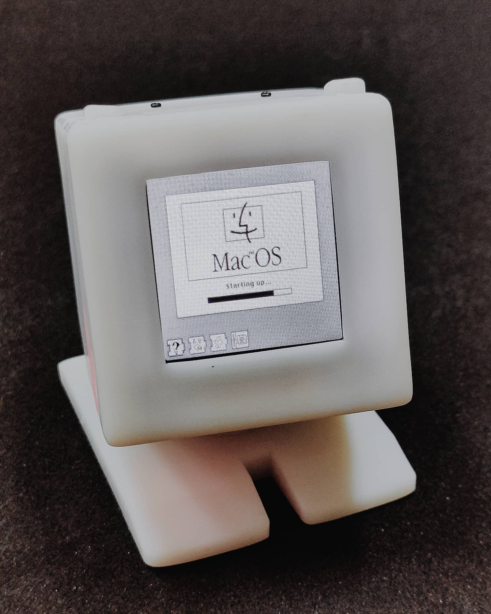
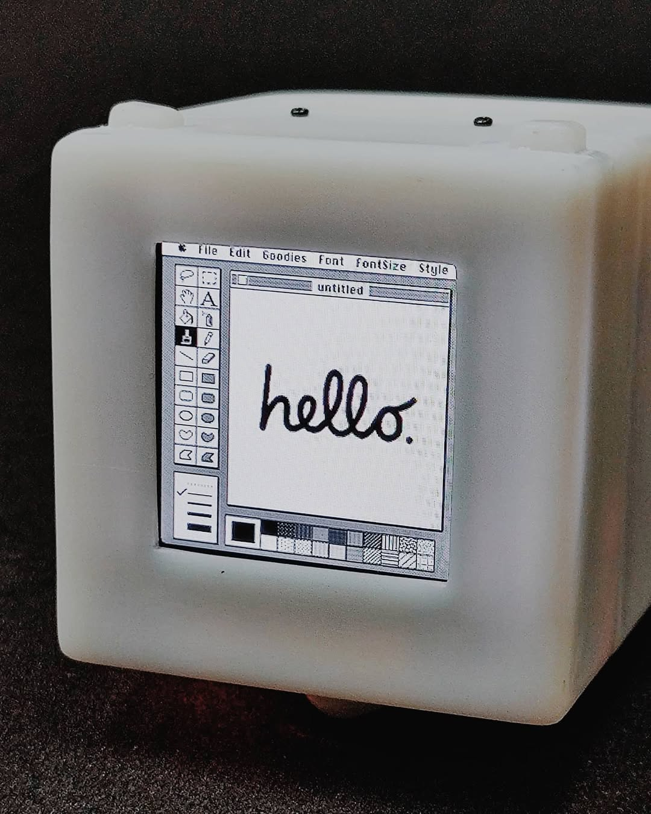
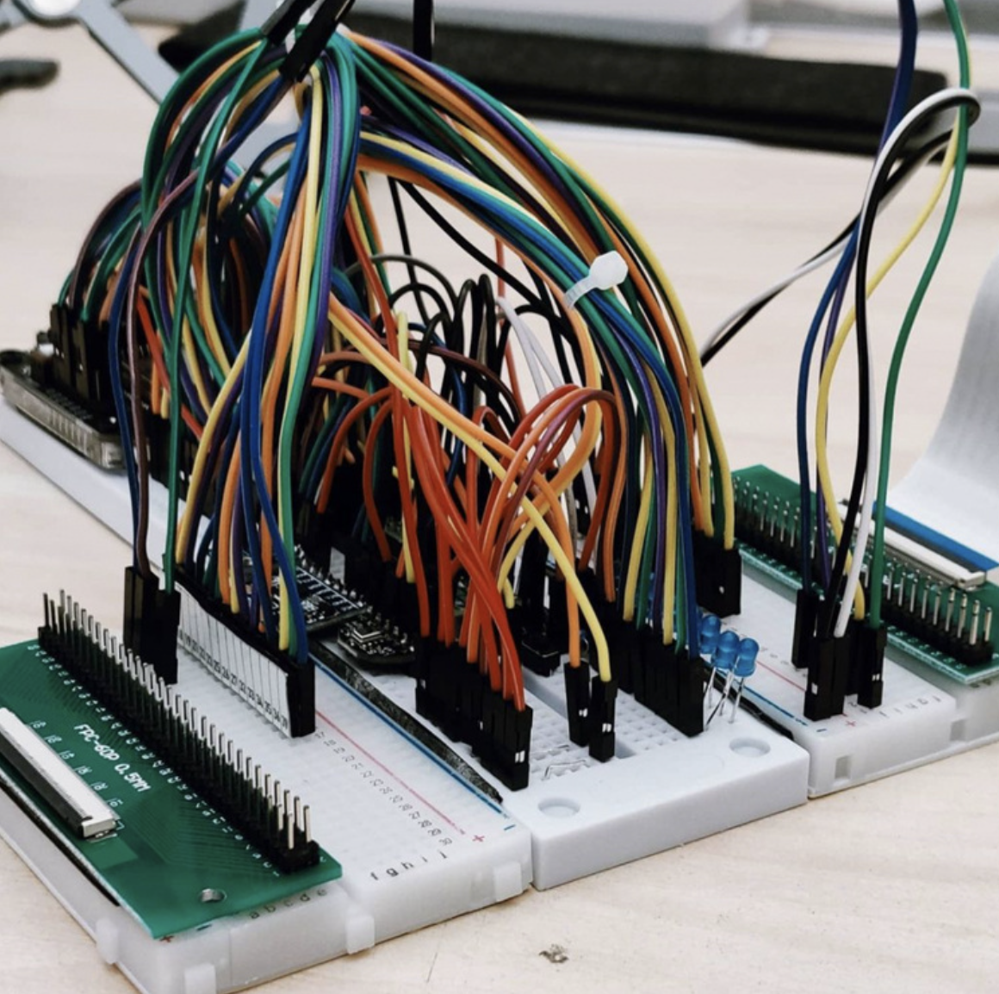
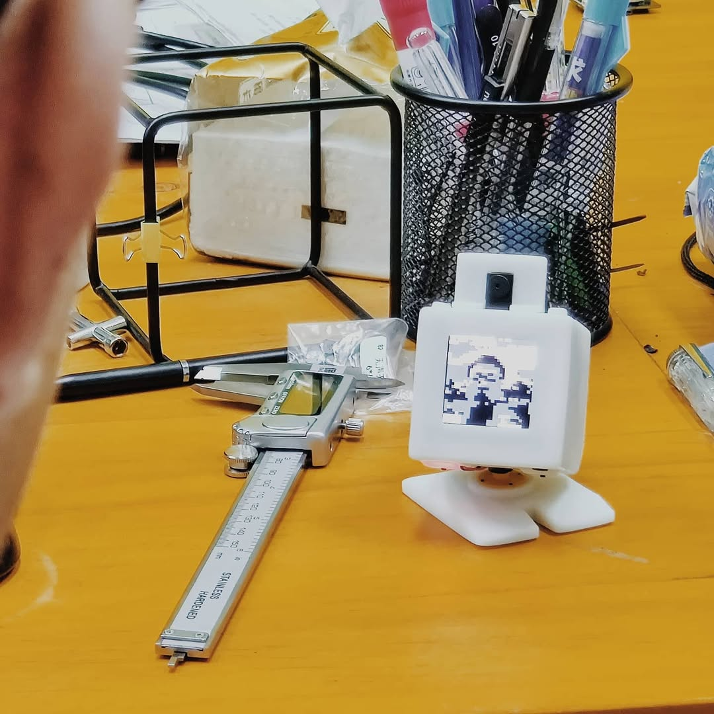
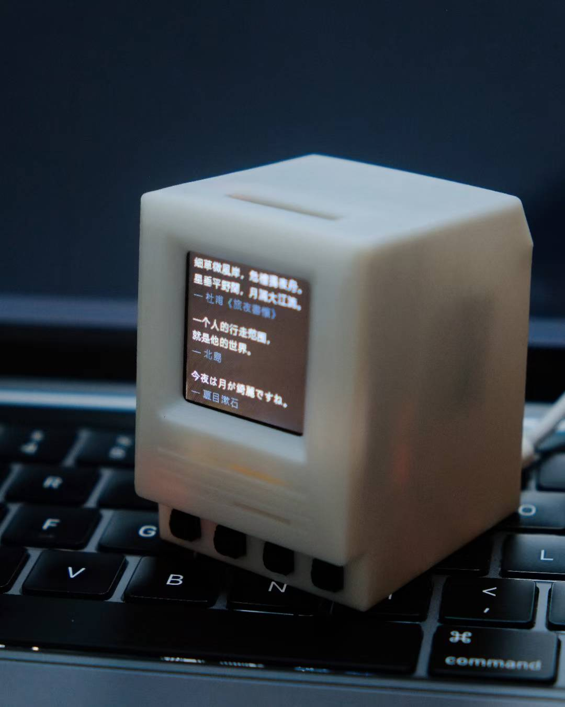
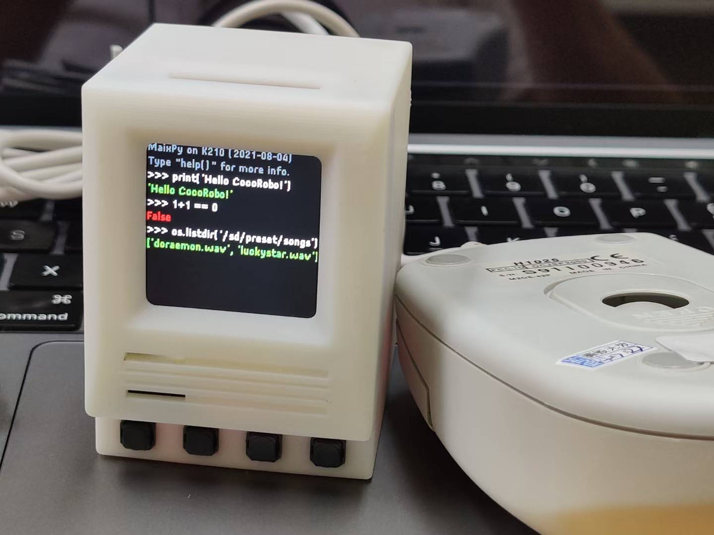
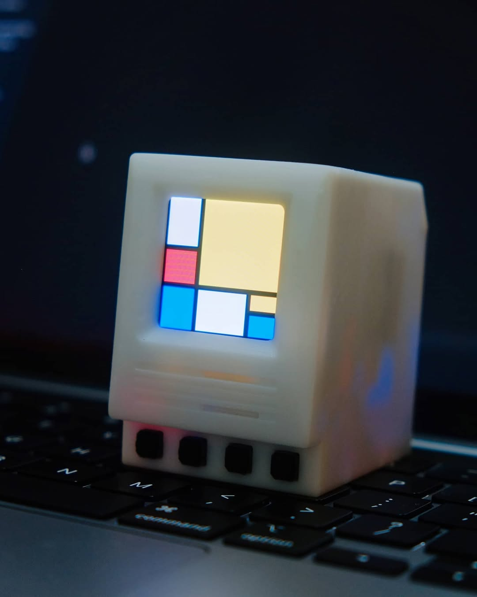
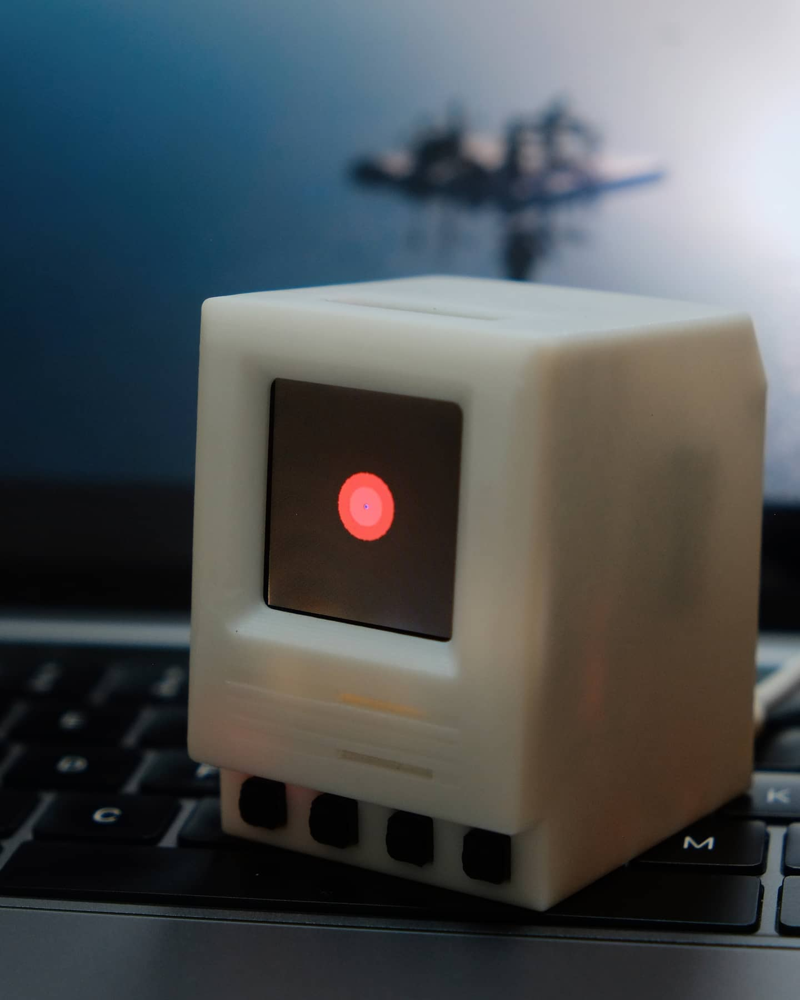

Recreating the original Macintosh as a tiny, programmable computer — built in 2021 with a 3D-printed enclosure, plug-and-play AI modules, and a compact 1.54‑inch color screen, designed so students can understand, modify, and extend it.
This project is powered by CocoRobo →

Among the many projects I built while starting my education technology company, this one remains a favorite. I worked closely with our mechanical and hardware engineers to bring the project to life, while leading the overall product experience and software implementation — designing and building the interaction layer end‑to‑end, from the on‑device UI to every demo running on it. I also implemented the main system interface that students interact with: a straightforward menu that lets them browse and run built‑in examples on the device, or upload custom programs from our companion web app.
The device runs on a small color screen and hosts experiences ranging from a classic Mac screensaver and a Python REPL to a VNC‑powered remote desktop. Beneath the retro aesthetic, the hardware is genuinely capable — it can run real‑time face tracking, object detection, and other machine learning models, all on a gadget small enough to hold in one hand. It was designed so students could understand, modify, and extend it themselves.
What I enjoyed most was working at the intersection of design and engineering: rapidly turning rough ideas into polished, delightful products. The same combination of fast prototyping, thoughtful craft, and building tools that help people create is what continues to drive my work.

Process notes & photos →A spectrum visualizer that radiates outward from the center of the display, reacting to surrounding sound in real time. The module's built‑in microphone captures audio samples and digitizes them into waveforms rendered on the mini Mac OS interface.
The track playing in the demo is by FKJ, one of my all‑time favorite musicians.

Plug a camera module into the top slot — like inserting a cartridge on a Game Boy — and it captures live video at up to 480p. Each raw frame is then run through a pixelization algorithm that intentionally downsamples and quantizes it into a retro, Game Boy Camera–style image — a deliberate aesthetic choice, not a hardware constraint.

A multilingual poetry display that cycles through four poems in Chinese, Japanese, and Korean — rendered using a stripped-down Noto CJK font, compiled into a bitmap header file and loaded from the micro SD card. An art installation that turns the tiny screen into a contemplative, cross‑cultural reading experience.
When I shared the project on Instagram, a friend reached out — he was part of the team at 3type, quietly working on a new pixelized CJK typeface called Dinkie Bitmap. He loved the idea of a tiny device rendering hand-crafted bitmap glyphs on a 240-pixel screen, so I sent him the gadget to experiment with. It was a nice reminder that the most unexpected connections come from sharing work openly.

An on-device MicroPython terminal accessed via Bluetooth or Wi-Fi

Randomized generative art inspired by Mondrian's Composition C

A sound-reactive demo with text-to-speech, inspired by 2001: A Space Odyssey
Development process — testing the camera module on the bench
Kendryte K210 — dual-core 64-bit RISC-V @ 400 MHz with FPU, 8 MB on-chip SRAM, KPU neural network accelerator, and FFT accelerator. Wi-Fi via ESP8285 (802.11 b/g/n). Runs MicroPython (MaixPy).
1.54-inch RGB LCD screen, 240×240 resolution. Bright enough to see the tiny Mac OS interface clearly.
Four physical buttons — Left, Right, Select, Restart — for navigating the on-device interface and running demos.
Built-in speaker module, rewired and placed just below the screen for audio playback and sound-reactive demos.
Top-slot cartridge-style hot-plug camera module, supporting up to 480p capture for the Pixel Camera demo.
External expansion port for connecting peripherals — keyboards, USB devices, and other hardware extensions.
Internal lithium battery with on/off switch on the back. Two USB-C ports — one for data transfer, one for charging.
External micro SD card slot for loading custom fonts, assets, and user programs. Fonts are compiled into bitmap header files and read directly from the card.
Supports custom .Dzk bitmap fonts for CJK and Latin text. The UI pixel font was designed by Type is Beautiful; the Poem Reader uses a stripped Noto CJK font compiled into a bitmap header file and loaded from SD.